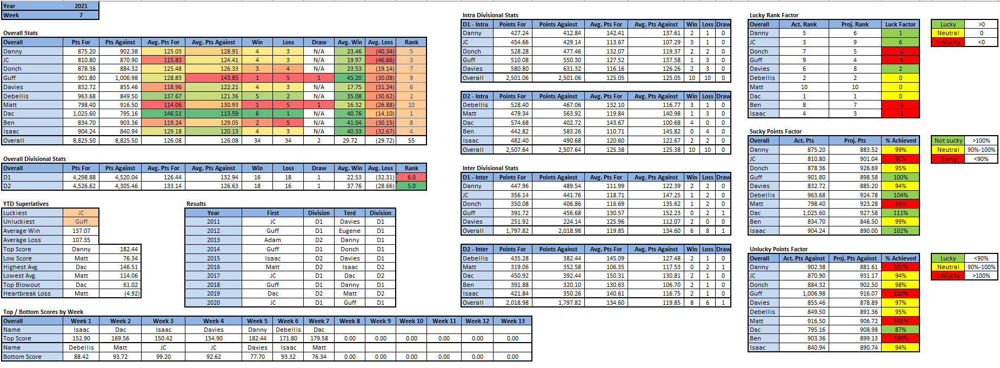
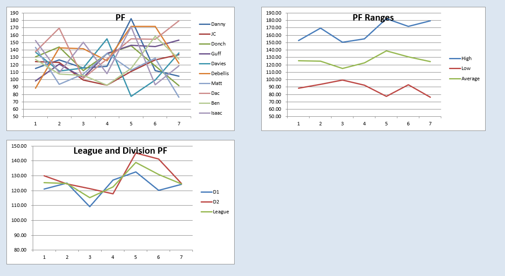

Power Rankings
WEEK 7 POWER RANKINGS
This is a nightmare
- Dac (-): Dac’s incredible run continued this week, as he took down the Terd 180 to 154. Scoring 180 points is impressive no matter what, but doing it while 3 starters are on bye/IR is even more impressive. Dac has now scored 150+ for 3 weeks in a row and could score half that and still have a greater than 50% chance of beating Matt next week on his way to a 5 game win streak.
- Debellis (-): Debellis’ 5 game win streak came to an abrupt end in the Springfield bowl as JC topped Debellis 134 to 122. After 2 straight weeks of 171+ followed by this mediocre week, the biggest question is has Debellis reverted to the mean or just hit a speed bump en route to a deep playoff run? A surefire victory in week 8 against the hobbled remains of Isaac’s team likely won’t provide any helpful insight.
- JC (+2): JC topped red hot Debellis this week and is now the proud owner of the 2nd longest win streak in the league, all while not scoring more than 134 points in any matchup this year. While JC’s team doesn’t exactly strike fear into the hearts of many, Murray, Swift, and a handful of good WRs are enough for breakout performances to give JC a fighting chance in any given week. While it may not be sexy, JC’s team is easily the top of D1.
- Isaac (-1): In the least surprising news of the week, Isaac failed to field a full team due to 4 injuries and 3 byes. As if that wasn’t bad enough, one of Isaac’s “healthy” starters only managed to make it to halftime before leaving injured. Despite only having 7.5 starters this week, Isaac managed to exceed projections by 17%, good enough for a tiny moral victory, which is the only type of victory he’s capable of getting for the foreseeable future.
- Danny (+1): Danny has the highest weekly score in the league this year and yet never broke 127 except for that lucky week. Speaking of lucky, Danny scored 105 points this week and won by 29. It was a pretty standard Danny week, with Tom Brady scoring a third of his points while Davante Adams and/or Hollywood Brown went off. With a couple more scheduling breaks, Danny could find himself a lock for the playoffs, or if things don’t go so well, a spot back at home in the dumps.
- Davies (+1): After 2 consecutive sub-100 weeks, Davies came out firing with an impressive 136 point performance. As predicted, Matt Stafford beat up on his old team and got Davies 33 points in the process because with Herbert on bye, Davies made the correct QB start for the first time this year. With an RB duo bottom 2 in the league, Davies will have to rely on his WRs to keep him competitive the rest of the year, which is exactly what he did vs. Isaac as 3 out of his 4 starters had 100+ yards and a TD.
- Donch (-3): Donch’s team is perfectly balanced, as he followed up his 3 game winning streak with a 3 game losing streak. Donch probably never had high hopes for this week, as his 5 best players were on bye, but he likely thought he had a fighting chance as he was against Ben’s dumpsquad. Donch will expect to get back on the winning side of things this week against Danny’s anti-vaxxers.
- Ben (+2): After starting the season with 5 losses, Ben has won his past two, doing everything he can to try and avoid a date with the Terd Bowl. For some reason, Ben continues to start OBJ which was a big factor in the aforementioned 5 game losing streak, but thankfully for Ben it didn’t matter this week as Joe Burrow continued to light up defenses and Eli Mitchell finally justified his $99 price tag, if only for one week.
- Guff (-1): Guff had his best week of the season so far with 154 points, but he still lost by 26. It’s been a rough couple weeks, as Guff has topped 145 for 3 weeks in a row, with only one win to show for it, while the YTD average league win is 137 points. Guff’s starters have come into their own lately to become a threat, but with one of the weakest benches in the league, the upcoming bye weeks could see Guff saying bye to any chance of leaving the dumps.
- Matt (-1): There are flaming dumpster fires and then there is whatever Matt’s team is. One may argue that Matt had 6 players on bye which is a fact, but Dalton Schultz, Tony Pollard, and the Dallas defense on bye aren’t what’s keeping Matt from fielding a respectable team. It took an almost 30 point game from Kamara to get Matt into the 70s, with any other normal RB likely causing Matt to flirt with the league history all time lower score. Kamara was also the only person on Matt’s team to score double figures. With a week 8 matchup vs. Dac, Matt might be wise to get comfortable in the dumps and start mentally preparing for his 3rd consecutive Terd Bowl.

